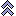

Clicking on icon  , a dialog box pops up on the right side of the figure.
, a dialog box pops up on the right side of the figure.
This dialog box displays all the created objects in a list.
Before the creation of the dialog box, points and lines without names are given a temporary name so that all the objects of the figure can be fully described.
The left side keys allow the user to navigate through the objects of the list.
If graphical, the selected object of the list is blinking, as well as the objects it is created with.
 : Reclassify the selected object of one step towards the beginning of the list. If necessary, the objects it is depending on will also be reclassifed.
: Reclassify the selected object of one step towards the beginning of the list. If necessary, the objects it is depending on will also be reclassifed.
 : Reclassify the selected object of one step towards the beginning of the list. If necessary, the objects depending on it on will also be reclassifed.
: Reclassify the selected object of one step towards the beginning of the list. If necessary, the objects depending on it on will also be reclassifed.

: Reclassify as far as possible the selected object towards the beginning of the list. : Reclassify as far as possible the selected object towards the end of the list.
: Reclassify as far as possible the selected object towards the end of the list.
 : Destroys the selected object and the objects depending on it.
: Destroys the selected object and the objects depending on it.
 : Destroys the selected object and the following objects.
: Destroys the selected object and the following objects.

 : Unmask the selected object (if it was masked).
: Unmask the selected object (if it was masked).
 : Allows to modify the selected object if it was created through a dialog box. For instance, if the selected object is an image point through a rotation, a dialog box will popup allowing the change of the rotation angle.
: Allows to modify the selected object if it was created through a dialog box. For instance, if the selected object is an image point through a rotation, a dialog box will popup allowing the change of the rotation angle.
 : Applies the current color and style to the selected object
: Applies the current color and style to the selected object
Intermediary objects : If checked, intermediary objects of the figure will be displayed in the list. Uncheked by default.
Masked objects visible : If checked, masked objects remain visible (unchecked by default).
Graphical objects have a tag. This tag is by default an empty string.
This tag can be used in MathGraph32 API or, for instance, to insert in a LaTeX display defined the LaTeX code of an already defined LaTeX display using the special LaTeX code\Lat this LaTeX code is specific to MathGraph32).
To set the tag of an object, use button Change tag.